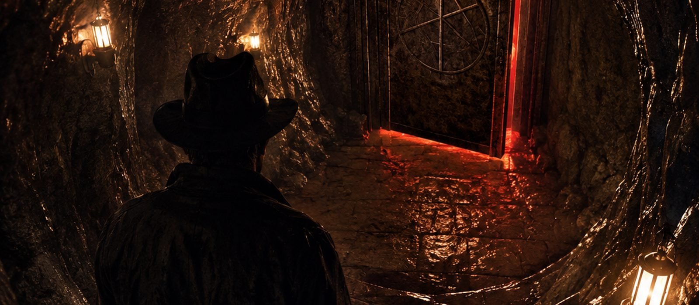
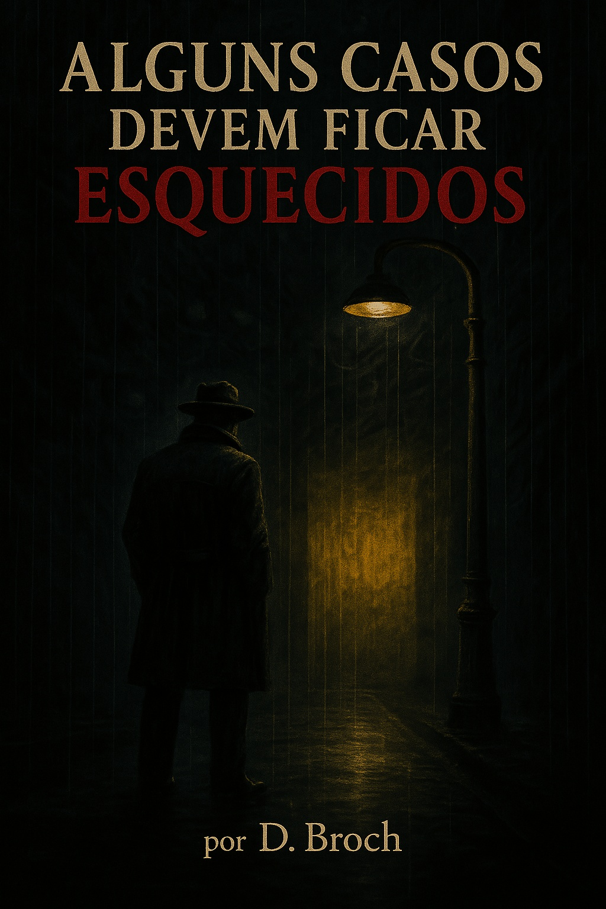
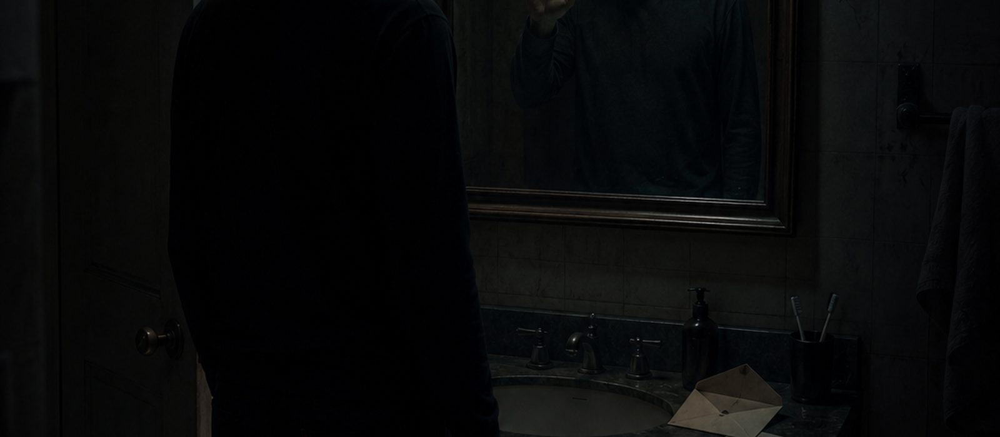
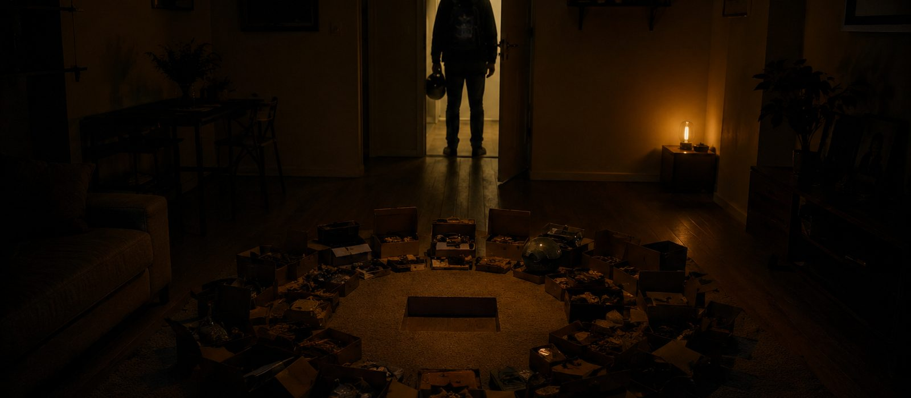

Caso Nº 001O Portal de Pedra Negra
Uma expedição de arqueologia encontra uma porta que não deveria existir numa caverna — e o homem estranho que aparece pra fechá-la antes que seja tarde demais.
Ler o casoTerror psicológico e investigação paranormal, escrito por D. Broch. Novos casos do universo publicados toda semana — de graça, aqui.

Histórias curtas publicadas toda semana — contadas por quem sobreviveu, ou por quem não teve essa sorte.

Caso Nº 001Uma expedição de arqueologia encontra uma porta que não deveria existir numa caverna — e o homem estranho que aparece pra fechá-la antes que seja tarde demais.
Ler o caso
Caso Nº 002Um aluguel barato demais. Um espelho que veio com o apartamento. E cartas endereçadas a um morto que continuam chegando — escritas em letra que você reconhece.
Ler o caso
Caso Nº 003Doze anos de entrega noturna com uma regra: não olha de volta. Até o Edifício Caetano, Ap. 9 — onde você só percebe tarde demais que não era o único sendo entregue.
Ler o casoUm novo caso é arquivado toda semana. Volte em breve ou acompanhe nas redes para saber quando abrir.
Em algum lugar entre o asfalto molhado e o néon que nunca apaga de vez, existem portas que não deveriam existir.
Elas não têm forma fixa. Podem ser um corredor de hotel, uma parede amarela desbotada, um restaurante de beira de estrada que ninguém lembra de ter visto antes. Alguns que passaram por lá tentaram descrever. A maioria parou de tentar. Os que não pararam... deixaram de ser bons narradores.
Existem aqueles que caçam o que vive nessas frestas. Existem aqueles que são caçados. E existem os que nunca tiveram escolha — que foram tocados por esse mundo antes mesmo de saber que ele existia, e agora carregam isso como cicatriz, como bússola, como maldição.
Este é um universo de lendas urbanas, criaturas que se alimentam de medo, memória e silêncio, e das poucas pessoas (e não-pessoas) que tentam manter a fronteira entre o nosso mundo e o que existe atrás da parede amarela. Algumas histórias aqui são contadas por quem sobreviveu. Outras, por quem não teve essa sorte. E outras ainda... pelo próprio monstro.
Gostou dos contos? O livro vai mais fundo — seis casos inéditos com o Detetive, disponível agora na Amazon.
O Detetive. Frio, irônico, de raciocínio rápido… mas longe de ser perfeito. Ele já enfrentou algo que o quebrou. Ficou preso em um lugar de onde ninguém deveria voltar. Desde então, luta para manter a mente intacta. Escrever o diário não é vaidade. É sobrevivência.
Neste volume, você vai encontrar:
Terror psicológico, investigação paranormal e atmosferas dignas de lendas da internet. Nem tudo pode ser explicado. Nem tudo pode ser enfrentado. Algumas verdades só podem ser escritas.
Este universo é escrito e mantido de forma independente. Se um conto te tirou o sono, considere apoiar via Pix — isso financia diretamente os próximos contos e livros.
Toda doação, de qualquer valor, vai direto para o tempo de escrita dos próximos casos. Não existe valor mínimo nem assinatura — é livre, como uma forma de dizer "continua".
Chave Pix:
⚠ Antes de confirmar o pagamento, verifique se a chave exibida no seu app é david.brochini@gmail.com.